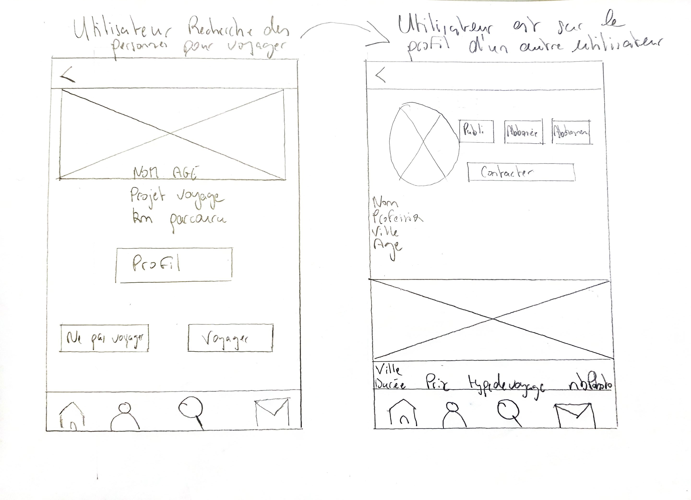
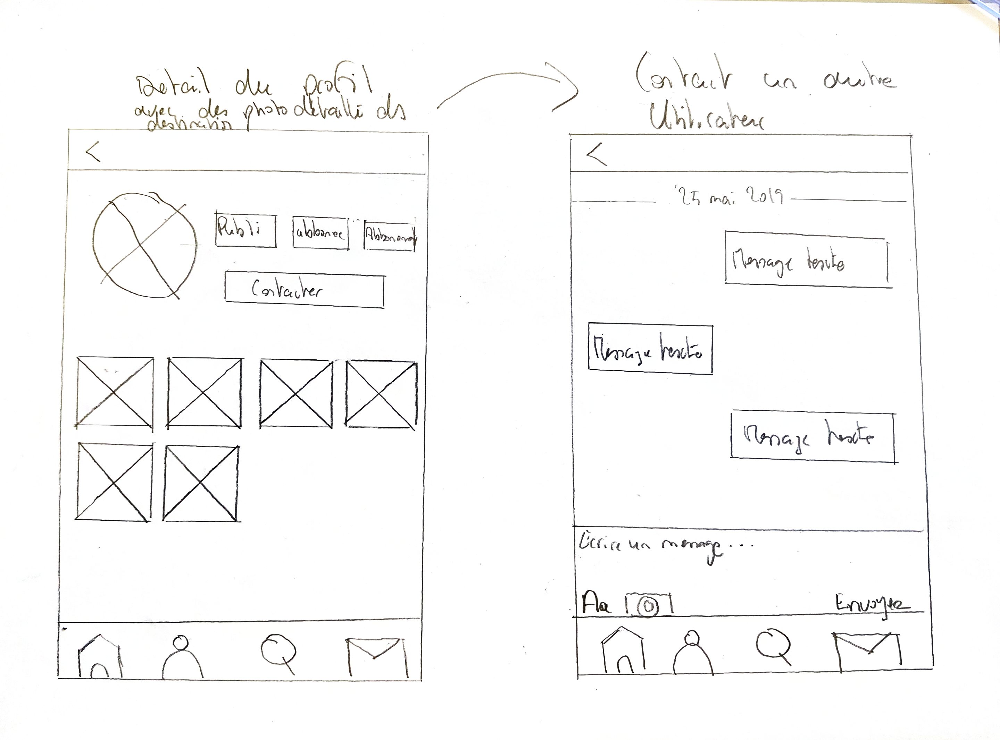

Treepy (projet en cours )
Dans le cadre d’un cours de design nous devions imaginer un réseau social innovant. J’ai imaginé cette application car j’ai remarqué que beaucoup d’étudiant désirent voyager mais ne trouve pas d’amis qui ont les mêmes disponibilités ou les mêmes envies de destination. L'application se base sur le même mode de fonctionnement avec un système de match qui va permettre à l'utilisateur de séléctionner avec qui il veut voyager.
Voir le projetTechnologie utiliseé
Détails du projet
Design-Thinking
ce projet nous avons commencé par utiliser la méthode agile Scrum qui consiste par commencer à définir le projet dans les grandes lignes puis à détailler les fonctionnalités en commençant par les plus importantes. A la suite de cela nous avons établii un User-flow sur papier pour nous aider à visualer les differentes parties du jeu. Après cela nous avons commencé à develloper le projet en ajoutant les fonctionnalités une par une.
User-flow papier
Storyboard
Storyboard2
Storyboard décrivant les differentes vues de l'utilisateur allant de la page d'Accueil à la messagerie.
Fonctionnalités p-3
Reherche

Profil

Profils-details

Messagerie

L'apllication est cours de création. Pour l'instant deux fonctionnalitées fonctionnent la connexion et l'inscription
Conclusion
Ce projet m'a permis d'en apprendre plus sur la modélisation d'une base de donnée ainsi que comment designer une bonne application de manière à être intuitive et ergonomique. J'ai également commencé à mettre en pratique les compétences que j'ai sur Angular